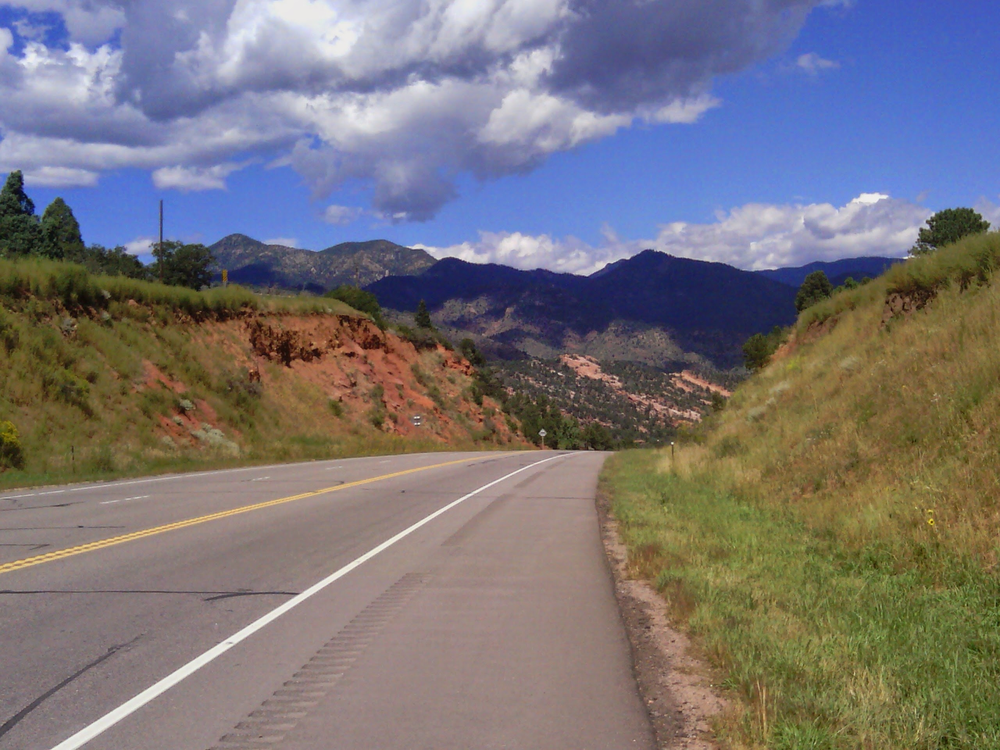
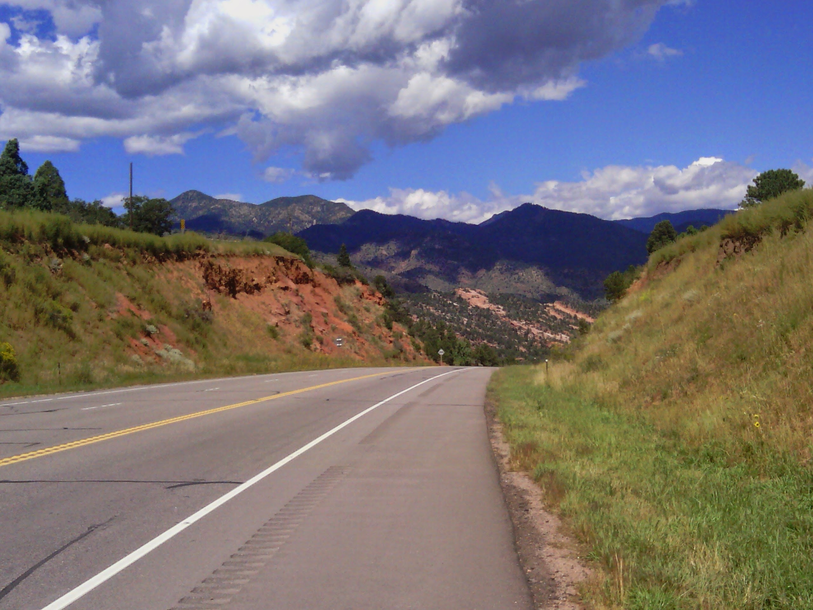

Adventure, available down any road never before ridden, is all around. It invites those with the stomach for it down its unknown parts. To find it, simply turn somewhere never before turned, travel beyond the point which once marked the end of the ride, or start somewhere never before started. “Getting lost” will liven up any tired mind, lighten the legs, open the eyes to novel sights, and place the mind somewhere altogether outside of itself.
Not yet had the sun’s wake up song wrested me from my sleep. My eyes stayed shut well into midmorning. The light flooded the inside of the tent and the noise of the southern swamp had dimmed to a whisper as I shuffled around looking for food. I reached for the peanut butter which I would spread over raisin bagels on this day and every single day to Denver.
Just after dawn, after packing up camp and having my first breakfast, I decided to visit the site of my campfellow to make good on the offer of his Gazetteer. A knock on the door of his camper announced my presence. To my surprise, not only was he awake and full of energy, but had the book of maps tucked under his arm and ready to hand over. We said our goodbyes, and I took off to begin the search for new roads and new destinations.
Time sits still when you have nowhere to go. At camp, the shine of the morning sun rose with my eyelids, which were heavy and crusted over. At camp, nothing within reach distracted me. I ate a bagel, found a bathroom, broke down the tent, and rolled up the tarp, organized the panniers, and fixed them all to the bike.
The conditions were ideal that morning, with mostly cloud-covered skies and a pleasant tailwind to assist my travels. When I got onto 60, after first stopping for a snack and a cup of coffee, I snapped a picture of several large barrels of hay, blanketed by an eerie fog evaporating into the atmosphere. There wasn’t much else to look at or do for the rest of the morning.
As fortune would turn in my direction, so too would the wind, providing much needed respite from the previous day’s ride, when I was battling gusts blowing in excess of sixty miles-per-hour. The day had gotten off to a late and slow start because I hadn’t slept well, beginning around nine in the morning as I packed up camp from underneath the stable pavilion.
 

Though early the wind wasted no time beginning its day as I rode into a mild, but noticeable head wind for the first stretch of riding. I had grown fond of the wheat plains of the midwest but longed for the first sight of the Rocky Mountains, something once weeks, but now mere days, away.